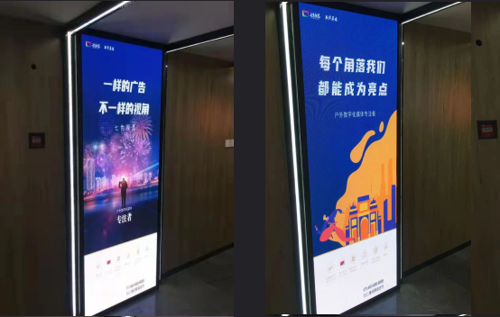
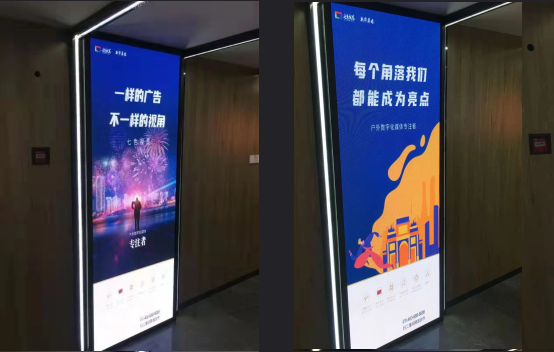
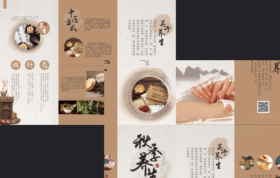

Graphic Work In China
Project Discription
Throughout my design career, I have created a vast array of works across multiple disciplines, including graphic design and website design. These projects encompassed areas such as commercial advertising, brand identity, and corporate websites, showcasing my creativity and versatility. Although many original files have been lost over time due to the sheer volume and passage of years, the impact of my work has been validated by client satisfaction and positive market feedback. This extensive experience highlights my strong design skills and practical expertise, as well as my enduring passion for the design industry.
GRAPHIC DESIGN
 

